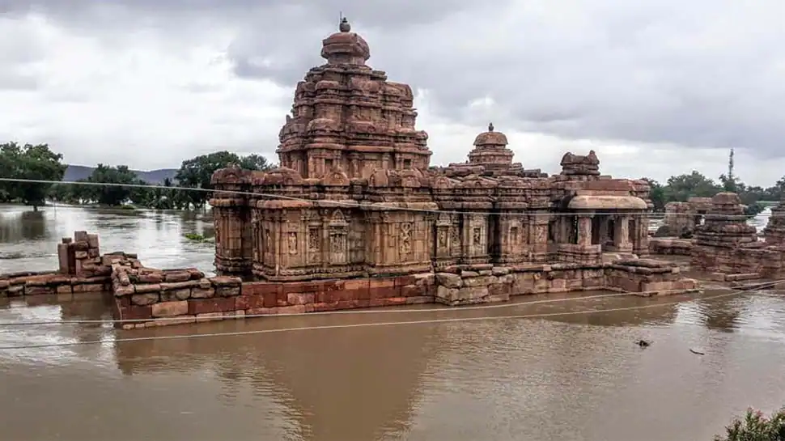

Karnataka
Food:
The classic and famous dish in Karnataka is Bisi bele bhath, which is basically a blend of
rice, lentils, assorted vegetables and spices, like asafoetida, nutmeg and curry leaves.
The variety of dosas, like butter dosa, Mysore Masala dosa and Set dosa are very popular across India.
Vegetation:

The forest ecosystem of Karnataka is unique and highly diverse. It forms an important component of
the natural resources of the environment. Vegetation types include tropical evergreen,
semi-evergreen, moist deciduous, dry deciduous, thorny scrubs, sholas and coastal mangroves.
Climate:
Karnataka has tropical monsoon climate. The main characteristics of this climate are hot and moist summers
and cool and dry winters. ... The main reason for this diversity are the influence of geographical location,
oceans, physical features, vegetation, and monsoon winds.